Denoising Autoencoders (dA)¶
Note
This section assumes the reader has already read through Classifying MNIST digits using Logistic Regression and Multilayer Perceptron. Additionally it uses the following Theano functions and concepts: T.tanh, shared variables, basic arithmetic ops, T.grad, Random numbers, floatX. If you intend to run the code on GPU also read GPU.
Note
The code for this section is available for download here.
The Denoising Autoencoder (dA) is an extension of a classical autoencoder and it was introduced as a building block for deep networks in [Vincent08]. We will start the tutorial with a short discussion on Autoencoders.
Autoencoders¶
See section 4.6 of [Bengio09] for an overview of auto-encoders. An autoencoder takes an input 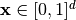 and first maps it (with an encoder) to a hidden representation 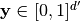 through a deterministic mapping, e.g.:
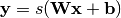
Where  is a non-linearity such as the sigmoid. The latent
representation 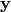, or code is then mapped back (with a
decoder) into a reconstruction 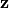 of the same shape as
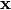. The mapping happens through a similar transformation, e.g.:
is a non-linearity such as the sigmoid. The latent
representation 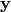, or code is then mapped back (with a
decoder) into a reconstruction 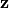 of the same shape as
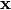. The mapping happens through a similar transformation, e.g.:
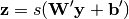
(Here, the prime symbol does not indicate matrix transposition.)
should be seen as a prediction of , given
the code . Optionally, the weight matrix 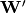
of the reverse mapping may be constrained to be the transpose of the forward
mapping: 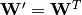. This is referred to as tied
weights. The parameters of this model (namely 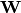,
 , 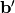 and, if one doesn’t use tied weights,
also ) are optimized such that the average reconstruction
error is minimized.
, 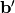 and, if one doesn’t use tied weights,
also ) are optimized such that the average reconstruction
error is minimized.
The reconstruction error can be measured in many ways, depending on the appropriate distributional assumptions on the input given the code. The traditional squared error 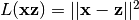, can be used. If the input is interpreted as either bit vectors or vectors of bit probabilities, cross-entropy of the reconstruction can be used:
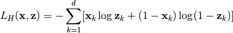
The hope is that the code is a distributed representation
that captures the coordinates along the main factors of variation in the data.
This is similar to the way the projection on principal components would capture
the main factors of variation in the data. Indeed, if there is one linear
hidden layer (the code) and the mean squared error criterion is used to train
the network, then the  hidden units learn to project the input in the
span of the first principal components of the data. If the hidden
layer is non-linear, the auto-encoder behaves differently from PCA, with the
ability to capture multi-modal aspects of the input distribution. The departure
from PCA becomes even more important when we consider stacking multiple
encoders (and their corresponding decoders) when building a deep auto-encoder
[Hinton06].
hidden units learn to project the input in the
span of the first principal components of the data. If the hidden
layer is non-linear, the auto-encoder behaves differently from PCA, with the
ability to capture multi-modal aspects of the input distribution. The departure
from PCA becomes even more important when we consider stacking multiple
encoders (and their corresponding decoders) when building a deep auto-encoder
[Hinton06].
Because is viewed as a lossy compression of , it cannot be a good (small-loss) compression for all . Optimization makes it a good compression for training examples, and hopefully for other inputs as well, but not for arbitrary inputs. That is the sense in which an auto-encoder generalizes: it gives low reconstruction error on test examples from the same distribution as the training examples, but generally high reconstruction error on samples randomly chosen from the input space.
We want to implement an auto-encoder using Theano, in the form of a class, that
could be afterwards used in constructing a stacked autoencoder. The first step
is to create shared variables for the parameters of the autoencoder
, and . (Since we are
using tied weights in this tutorial, 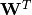 will be used for
):
Note that we pass the symbolic input to the autoencoder as a parameter.
This is so that we can concatenate layers of autoencoders to form a deep
network: the symbolic output (the above) of layer will
be the symbolic input of layer 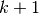.
Now we can express the computation of the latent representation and of the reconstructed signal:
And using these functions we can compute the cost and the updates of one stochastic gradient descent step:
We can now define a function that applied iteratively will update the
parameters W, b and b_prime such that the
reconstruction cost is approximately minimized.
If there is no constraint besides minimizing the reconstruction error, one
might expect an auto-encoder with  inputs and an encoding of dimension
(or greater) to learn the identity function, merely mapping an input
to its copy. Such an autoencoder would not differentiate test examples (from
the training distribution) from other input configurations.
inputs and an encoding of dimension
(or greater) to learn the identity function, merely mapping an input
to its copy. Such an autoencoder would not differentiate test examples (from
the training distribution) from other input configurations.
Surprisingly, experiments reported in [Bengio07] suggest that, in practice, when trained with stochastic gradient descent, non-linear auto-encoders with more hidden units than inputs (called overcomplete) yield useful representations. (Here, “useful” means that a network taking the encoding as input has low classification error.)
A simple explanation is that stochastic gradient descent with early stopping is similar to an L2 regularization of the parameters. To achieve perfect reconstruction of continuous inputs, a one-hidden layer auto-encoder with non-linear hidden units (exactly like in the above code) needs very small weights in the first (encoding) layer, to bring the non-linearity of the hidden units into their linear regime, and very large weights in the second (decoding) layer. With binary inputs, very large weights are also needed to completely minimize the reconstruction error. Since the implicit or explicit regularization makes it difficult to reach large-weight solutions, the optimization algorithm finds encodings which only work well for examples similar to those in the training set, which is what we want. It means that the representation is exploiting statistical regularities present in the training set, rather than merely learning to replicate the input.
There are other ways by which an auto-encoder with more hidden units than inputs could be prevented from learning the identity function, capturing something useful about the input in its hidden representation. One is the addition of sparsity (forcing many of the hidden units to be zero or near-zero). Sparsity has been exploited very successfully by many [Ranzato07] [Lee08]. Another is to add randomness in the transformation from input to reconstruction. This technique is used in Restricted Boltzmann Machines (discussed later in Restricted Boltzmann Machines (RBM)), as well as in Denoising Auto-Encoders, discussed below.
Denoising Autoencoders¶
The idea behind denoising autoencoders is simple. In order to force the hidden layer to discover more robust features and prevent it from simply learning the identity, we train the autoencoder to reconstruct the input from a corrupted version of it.
The denoising auto-encoder is a stochastic version of the auto-encoder. Intuitively, a denoising auto-encoder does two things: try to encode the input (preserve the information about the input), and try to undo the effect of a corruption process stochastically applied to the input of the auto-encoder. The latter can only be done by capturing the statistical dependencies between the inputs. The denoising auto-encoder can be understood from different perspectives (the manifold learning perspective, stochastic operator perspective, bottom-up – information theoretic perspective, top-down – generative model perspective), all of which are explained in [Vincent08]. See also section 7.2 of [Bengio09] for an overview of auto-encoders.
In [Vincent08], the stochastic corruption process randomly sets some of the inputs (as many as half of them) to zero. Hence the denoising auto-encoder is trying to predict the corrupted (i.e. missing) values from the uncorrupted (i.e., non-missing) values, for randomly selected subsets of missing patterns. Note how being able to predict any subset of variables from the rest is a sufficient condition for completely capturing the joint distribution between a set of variables (this is how Gibbs sampling works).
To convert the autoencoder class into a denoising autoencoder class, all we need to do is to add a stochastic corruption step operating on the input. The input can be corrupted in many ways, but in this tutorial we will stick to the original corruption mechanism of randomly masking entries of the input by making them zero. The code below does just that:
In the stacked autoencoder class (Stacked Autoencoders) the weights of
the dA class have to be shared with those of a corresponding sigmoid layer.
For this reason, the constructor of the dA also gets Theano variables
pointing to the shared parameters. If those parameters are left to None,
new ones will be constructed.
The final denoising autoencoder class becomes:
Putting it All Together¶
It is easy now to construct an instance of our dA class and train
it.
In order to get a feeling of what the network learned we are going to plot the filters (defined by the weight matrix). Bear in mind, however, that this does not provide the entire story, since we neglect the biases and plot the weights up to a multiplicative constant (weights are converted to values between 0 and 1).
To plot our filters we will need the help of tile_raster_images (see
Plotting Samples and Filters) so we urge the reader to study it. Also
using the help of the Python Image Library, the following lines of code will
save the filters as an image:
Running the Code¶
To run the code:
python dA.py
The resulted filters when we do not use any noise are:
The filters for 30 percent noise: